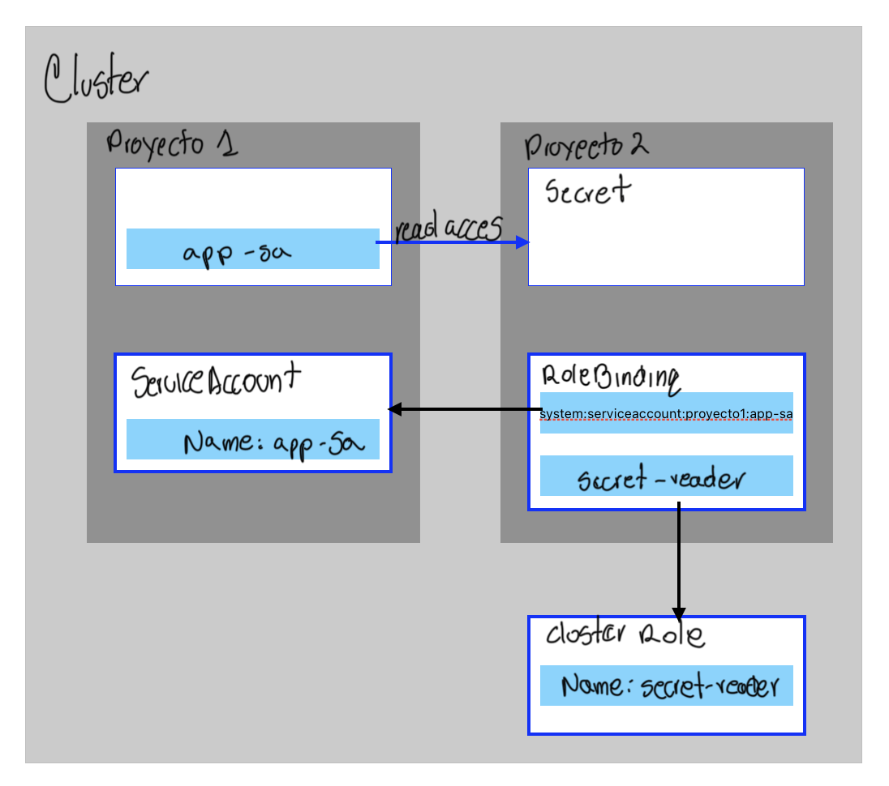
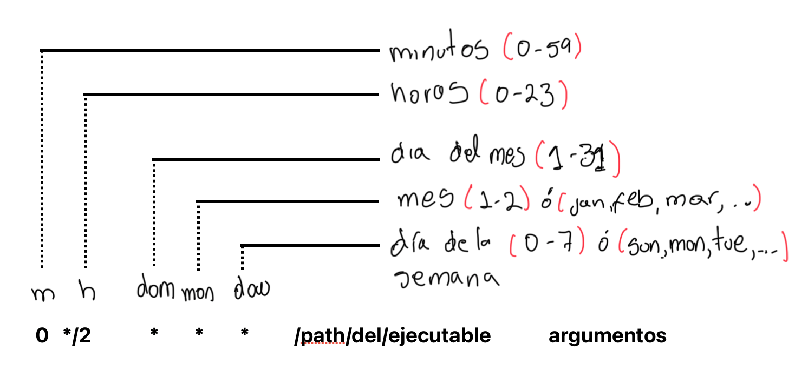

Capituolo 8 - Seguridad de aplicaciones
Control de permisos de aplicaciones con restricciones del contexto de seguridad
- Crear cuentas de servicio (service account) y aplicar permisos, y gestionar las restricciones de contexto de seguridad
Restricciones de Contexto de Serguridad (SCCs Security Context Constraints)
RH OpenShift provee SCCs, un mecanismo que limita el acceso desde un pod en ejecución al host del ambiente, y tiene los siguientes recursos de hosts:
- Contenedores con derechos de ejecución
- Request de capacidades para un contenedor
- Modificar el contecto SELinux a un contenedor
- Modificar el ID del usuario
Los Admin del Clúster pueden ejecutar el comando oc get scc y obtener la lista de SCCs definidas para OpenShift, por default están:
anyuihostacceshostmount-anyuihostnetworhostnetwork-v2lvms-topolvm-nodlvms-vgmanagemachine-api-termination-handlenode-exportenonroononroot-v2privilegerestricterestricted-v2
Se puede obtener información adicional con oc describe scc anyuid.
Muchos de los pods creandos en OpenShift usan la resticción restricted-v2 el cual provee límite de acceso a los recursos externos a OpenShift. Con el argumento describe puede ver la restricción contexto de seguridad que el pod está usando:
oc describe pod console-5df4fcbb47-67c52 -n openshift-console | grep scc
Las imágenes de contenedores públicos (Por ejemplo Docker Hub) puede no ejecutarse cuando se utiliza el SCC restricted-v2. Se puede utilizar el argumento scc-subjet-review para listar todas las restricciones de un contenedor:
oc get deployment ocampos -o yaml | oc adm policy scc-subject-review -f -
El SCC anyuid es la definición de estrategia de ejecución como usuario RunAsAny, lo que significa que el pod se puede ejecutar como cualquier ID de usuario disponible en el contenedor.
Para modificar el contanedor para que se ejecute con un SCC diferente, se debe crear un service account que esté en bound a un pod. Se puede agregar la opción -n para elegir un namespace
oc create serviceaccount service-account-name
Y para asociar el service account a la SCC, se utiliza oc adm policy con el argumento -z, así:
oc adm policy add-scc-to-user SCC -z service-account
NOTA: Solo los Admin Clúster pueden asignar/remover SCC a un service account
Modificar un deployment existente para que use un service account. Se el comando finaliza correctamente, los pods serán asociados cuando se redespliegue el ¨deployment
oc set serviceaccount deployment/deployment-name service-account-name
Privilegios de contenedores
Algunos contenedores pueden necesitar acceder al entorno de ejecución del host.Utilice los SCC para habilitar el acceso de los contenedores privilegiados mediante la creación de cuentas de servicio con acceso privilegiado.
Documentación:
Permiso de acceso de aplicaciones a las APIs de Kubernetes
- Ejecución de APPs que requieresn acceso a la API de K8S como APP del Clúster
Seguridad en APIs de K8S
Con un APIs de K8S, un usuario o APP puede consultar y modificar el estado del cluster. Para proteger el clúster de interacciones maliciosas, se debe otorgar acceso a diferentes API de K8S.
La autorización RBAC está preconfigurada en OpenShift y una APP requiers autotización RBAC explícita para acceder a las APIs de K8S.
Autorización de APP con Service Account
Un Service Account es un objeto in K8S dentro de un proyecto. El Service Account representa la identidad de una APP que se ejecuta en un pod. Para otorgar acceso de la APP a la API de K8S, tomar estas acciones:
- Crear un Service Account de APP
- Otorgar acceso al *Service Account al API de K8S
- Asinar el Service Account a los pods de la APP
Si en la definición de un pod no se especifica el Service Account el pod utilizará el Service Acoount por defecto y Openshift no otorga derechos sobre esta cuenta.
Casos de uso de acceso al API de K8S
| Casos de Uuso | Descripción |
|---|---|
| Monitoreo de APPS | Aplicaciones que necesitan acceder a observar la salubridad de los recursos del Clúster, por ejemplo RH Advanced Clpuster Security (ACS) para validar las vulnerabilidad de los contenedores en el clúster. |
| Controlladores | Son APPs que están constantemente en modo vigilar e intentar que un recurso llegue al estado previsto |
| *Operators | Creaciójn automatica de Operadores, configuración y gestión de instancias de APPs nativas de K8S |
APP API K8S, Autorización con Roles
Ejemplo de crear un Role para una APP que lea secretos
apiVersion: rbac.authorization.k8s.io/v1
kind: ClusterRole
metadata:
name: secret-reader
rules:
- apiGroups: [""]
resources: ["secrets"]
verbs: ["get", "watch", "list"]
OpenShift tiene roles predetermiandos que se pueden utilizar, como el role de Edición que puede ver Secrets, es menos restrictivo y puede crear la mayoría de objetos.
Vincular Roles a Service Account
Para que una APP use los permisos del Role, se debe vincular el role o el role-cluster al Service Account de la APP utilizando el comando oc adm policy add-role-to-user. Con el argumento -z se evita agregar el prefijo system:serviceaccount:project así:
oc adm policy add-role-to-user cluster-role -z service-account
Asignación del role cluster al Service Acoount:
oc adm policy add-cluster-role-to-user cluster-role service-account
Asignando App Service Account a Pods
OpenShift usa RBAC con los roles aosciados a los Service Account para dar/denegar permisos de accesoa un recurso especificandolo en la definición del pod spec.serviceAccountName. A partir de la versión 4.11 de OpenShift los token no se generan automaticamente y se debe montar el token como un volumen en el Pod para que la APP pueda acceder a él.
Rango acceso de APPs a los recursos de la API de K8S.
Un Acceso de una APP en el mismo namespace a otro recursos, otro ns o en todos los ns.
- Acceso a los recursos API en el mismo namespace: Se necesecita un role o un cluster role y un service account en el ns. Se debe vincular el role asociadoa al service account con las acciones permitidas al recurso
- Acceso a los recursos API en diferentes namespace: Se debe crear una vinculación de role en el proyecto del recurso, con la siguiente sintaxis:
system:serviceaccount:project:service-account

Documentación:
- Using RBAC to Define and Apply Permissions
- Understanding and Creating Service Accounts
- Using Service Accounts in Applications
- About Automatically-generated Service Account Token Secrets
Mantenimiento de clústeres y nodos con tareas Cron de Kubernetes
- Automatización de tareas regulares de gestión del clúster y de APPs con cron jobs
Tareas de mantenimiento
Los administradores del clúster pueden programar tareas que automaticen el mantenimiento de tareas en el clúster, otros usuarios pueden programar tareas de mantenimeinto sobre sus APPs. Las tareas de mantenimiento varian de acuerdo a los privilegios requeridos
K8S Batch recursos API
En OpenShift se pueden automatizar tareas usando Jobs y cron jobs y se configuran de una única ejecución o con frecuencia
job: Ejecución única
Ejemplo K8S Job, con el comando oc create job --dry-run=client para obtener el YAML
oc create job --dry-run=client -o yaml test --image=registry.access.redhat.com/ubi8/ubi:8.6 -- curl https://example.com
Agregar metadata, labels o anotaciones para definir el job:
apiVersion: batch/v1
kind: Job
metadata:
creationTimestamp: null
name: test
spec:
template:
metadata:
creationTimestamp: null
spec:
containers:
- command:
- curl
- https://example.com
image: registry.access.redhat.com/ubi8/ubi:8.6 6
name: test
resources: {}
restartPolicy: Never
status: {}
Cron Job: Ejecución con frecuencia de ejecución
Ejemplo K8S Cron Job, con el comando oc create cronjob --dry-run=client para obtener el YAML
oc create cronjob --dry-run=client -o yaml test --image=registry.access.redhat.com/ubi8/ubi:8.6 --schedule='0 0 * * *' -- curl https://example.com
Agregar metadata, labels o anotaciones para definir el cronjob:
apiVersion: batch/v1
kind: CronJob
metadata:
creationTimestamp: null
name: test
spec:
jobTemplate:
metadata:
creationTimestamp: null
name: test
spec:
template:
metadata:
creationTimestamp: null
spec:
containers:
- command:
- curl
- https://example.com
image: registry.access.redhat.com/ubi8/ubi:8.6 7
name: test
resources: {}
restartPolicy: OnFailure
schedule: 0 0 * * * 8
status: {}
Estructura de Cron Jobs en Linux

Ejemplos
| Programnación específica | Descripción |
|---|---|
| 0 0 * * * | Todos los días a la media noche |
| 0 0 * * 7 | Todos los domingos a la media noche |
| 0 * * * * | Cada hora |
| 0 */4 * * * | Cada 4 horas |